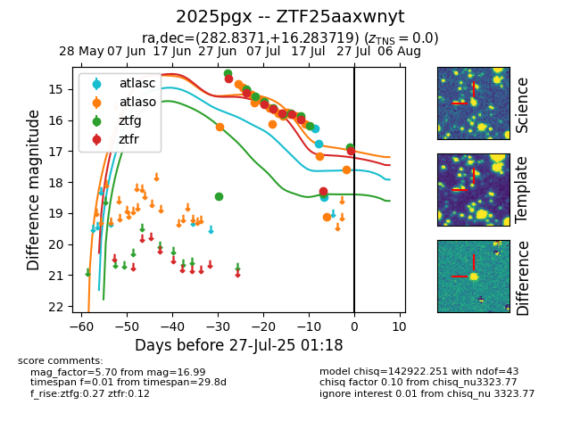

Target 2025pgx at 2025-07-27 01:18, see:
FINK: fink-portal.org/2025pgx
Lasair: lasair-ztf.lsst.ac.uk/objects/2025pgx
ALeRCE: alerce.online/object/2025pgx
TNS: wis-tns.org/object/2025pgx
YSE: ziggy.ucolick.org/yse/transient_detail/2025pgx
alt names
ZTF25aaxwnyt (ztf,fink)
2025pgx (tns,yse)
coordinates:
equatorial (ra, dec) = (282.8371,+16.28372)
galactic (l, b) = (47.4953,+7.36498)
photometry
last atlasc=18.50, atlaso=17.61, ztfg=16.86, ztfr=16.99
4 atlasc, 22 atlaso, 12 ztfg, 9 ztfr detections
